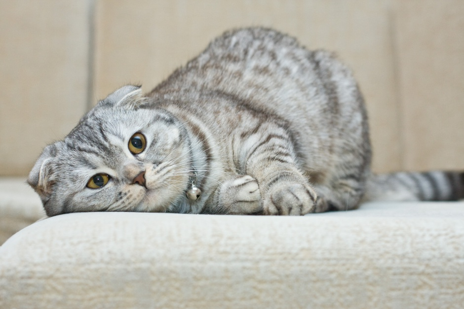

Это моя первая HTML страница
О себе: Сарычев Никита Вячеславович;
1 сентября 2005 года рождения;
студент 2 курса ИБАСРодился в Оренбургской области, медалист, есть два кота и две собаки,
люблю компьютерные игры, в основном шутеры, и заниматься на турнике
Какие фильмы мне нравятся:
Тёмный рыцарь
Драйв
Бойцовский клуб
Какая музыка мне нравится:
Эмо-рэп
Альтернативный рок
Русский хип-хоп
Как связаться со мной:
